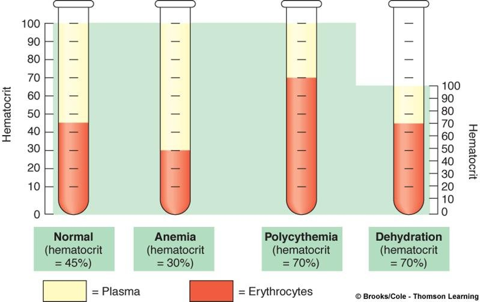
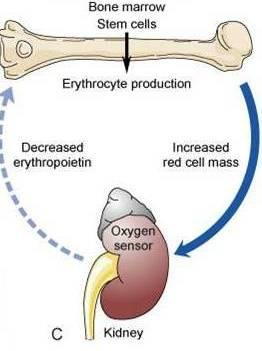

Week 2
Polycythemia
Polycythemia Basics — Relative vs. Absolute
"Poly-" means many — polycythemia means having too many red blood cells. There are two big buckets: relative polycythemia (a false elevation) and absolute polycythemia, which splits into primary and secondary.
| Type | What's Actually Happening |
|---|---|
| Relative | A false elevation from hemoconcentration — plasma volume is low (usually severe dehydration), so RBCs look falsely elevated on a percentage basis. There isn't actually an excess of red blood cells. |
| Primary (Absolute) | Polycythemia vera — a true bone marrow stem cell disorder causing overproduction of red blood cells. |
| Secondary (Absolute) | A true increase in red blood cells as a compensatory response to chronic tissue hypoxia. |

Risk Factors for Absolute Polycythemia
- Chronic hypoxia — most commonly COPD (chronic bronchitis or emphysema).
- Living at high altitude — can progress to chronic mountain sickness.
- Long-term cigarette smoking.
- Familial/genetic predisposition.
- Long-term carbon monoxide exposure — tunnel workers, coal miners, other underground workers, garage attendants, and people in heavily polluted urban areas.
Relative Polycythemia
| Term | Detail |
|---|---|
| Cause | An isolated decrease in plasma volume, most often from severe dehydration. |
| Effect | A false elevation of hemoglobin, hematocrit, and RBC percentage — the numbers look high only because the plasma they're measured against is low. |
| Treatment | Correct the underlying cause of the hemoconcentration (e.g., rehydration). Once the fluid deficit is corrected, the polycythemia resolves — there's nothing else to treat. |
Primary Polycythemia (Polycythemia Vera)
| Term | Detail |
|---|---|
| Definition | A rare, slow-growing blood cancer/stem cell disorder — a single mutated stem cell overproduces red blood cells, and often white blood cells and platelets too (everything except lymphocytes), since it affects the bone marrow broadly. |
| Epidemiology | Typically occurs in people over 60; about twice as common in men. |
| Pathophysiology | A chronic myeloproliferative disorder — the excess red blood cells thicken the blood. |
Polycythemia Vera — Manifestations
- Headache, fatigue, weight loss, dyspnea.
- Hypertension and clotting problems — the excess red blood cells collide and clump in the vessels.
- A ruddy (plethoric) color.
- Intense, painful itching (aquagenic pruritus), especially worse with heat or water — patients are particularly bothered by warm water.
Secondary Polycythemia
| Term | Detail |
|---|---|
| Definition | An adaptive, compensatory response to chronic tissue hypoxia — not a bone marrow disorder itself. |
| Mechanism | The body senses it's hypoxic; the kidneys secrete erythropoietin, and the bone marrow responds by making more red blood cells to try to carry more oxygen. |
| Most Common Causes | COPD and restrictive lung disease (poor gas exchange despite adequate red blood cells) and high altitude. |

Complications Shared by Primary & Secondary Polycythemia
| Mechanism | Findings |
|---|---|
| Increased Blood Viscosity & Volume | Hypertension, headache, and inability to concentrate. Cyanosis of the lips, nails, and mucous membranes can occur but is less common than the other findings. |
| Decreased Blood Flow | Excess red blood cells collide and clump, slowing flow — like trying to push too much water through a straw. Raises the risk of DVT (deep vein thrombosis), angina, cerebral insufficiency, and TIAs (transient ischemic attacks). |
| Hypermetabolism | Night sweats and weight loss. |
| Other | Itching and pain in the fingers and toes. |
The biggest concern with any absolute polycythemia (primary or secondary): stroke and heart attack from clotting. Too many red blood cells collide and clump in the vessels, blocking blood flow to the brain and heart.
Self-Test Flashcards
Click a card to flip it and check your answer.
What's the difference between relative and absolute polycythemia?
Relative polycythemia is a false elevation from hemoconcentration (low plasma volume, usually dehydration) — correcting the fluid deficit resolves it. Absolute polycythemia (primary or secondary) is a true increase in red blood cell mass.
What is polycythemia vera, and how does it differ from secondary polycythemia?
Polycythemia vera (primary polycythemia) is a bone marrow stem cell disorder — a single mutated stem cell overproduces red blood cells. Secondary polycythemia is a compensatory response to chronic tissue hypoxia, not a bone marrow disorder.
What causes secondary polycythemia, and through what mechanism?
Chronic hypoxia (COPD, high altitude, chronic smoking, carbon monoxide exposure) — the kidneys sense the hypoxia and secrete erythropoietin, driving the bone marrow to make more red blood cells.
Who is at highest risk for polycythemia vera?
Adults over 60, and about twice as common in men.
What two classic findings point to polycythemia vera?
A ruddy (plethoric) color, and intense itching (aquagenic pruritus) that's worse with heat or water.
What's the single biggest clinical concern across both primary and secondary polycythemia?
Cardiovascular events — stroke and heart attack from clotting, since excess red blood cells increase blood viscosity and clog vessels.
What occupational exposures raise the risk of secondary polycythemia, and why?
Tunnel workers, coal miners, and garage attendants — chronic carbon monoxide exposure causes tissue hypoxia even when ambient oxygen looks adequate.
How can erythropoiesis-stimulating agents (like epoetin alfa) cause polycythemia?
Overcorrecting hemoglobin drives red blood cell production too high, creating an iatrogenic polycythemic, hypercoagulable state — part of why the hemoglobin greater than 10 g/dL black-box warning exists.
What increased blood finding explains the hypertension and headache seen in polycythemia?
Increased blood viscosity and volume — thicker blood raises blood pressure and can impair perfusion, causing headache and difficulty concentrating.
What complications result from decreased blood flow in polycythemia?
Increased clotting risk (DVT), angina, cerebral insufficiency, and transient ischemic attacks (TIAs).
What "hypermetabolic" symptoms are seen in polycythemia?
Night sweats and weight loss.
How is relative polycythemia treated, differently from secondary polycythemia?
Relative polycythemia is treated by correcting the underlying fluid deficit (e.g., rehydration); secondary polycythemia is treated by addressing the source of chronic hypoxia.